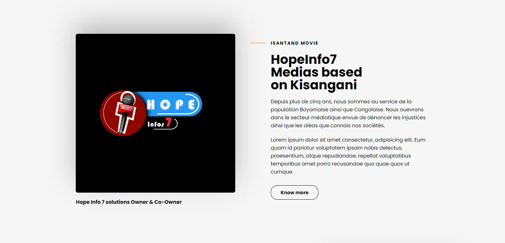

Étude de cas 05 / 07Médias
Hope Info 7
Une identité digitale pour un média basé à Kisangani, engagé dans l'information et la mise en valeur des réalités locales.

01Le besoin
Un média local a besoin d'être reconnu au premier coup d'œil et de publier facilement. Le projet consistait à lui donner une identité visuelle et un site à la hauteur de sa ligne éditoriale.
02Ce que j'ai construit
- Identité visuelle du média
- Site média pour publier et mettre en avant l'information locale
- Présence digitale cohérente entre le site et les autres supports
03Les choix de conception
- Une mise en page qui laisse la place à l'actualité et à la mise en valeur des réalités locales.
04Voir le projet
Technologies et outils : Identité visuelle · Design web.
Ce site n'est pas consultable publiquement. Une démonstration est disponible sur demande.
Un projet du même genre ?
Parlons-en.
Vous n'avez pas besoin de savoir comment le construire. Dites-moi simplement ce que vous voulez améliorer.